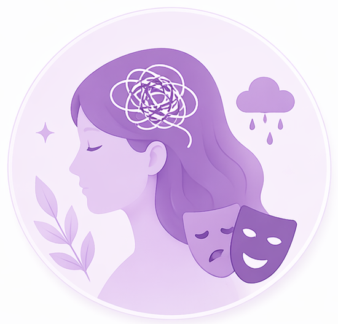

Temukan cara menjaga kesehatan emosi dan psikologis agar Anda tetap merasa tenang dan seimbang selama masa menopause.

Kelola perubahan suasana hati dengan langkah sederhana yang membantu Anda merasa lebih tenang, stabil, dan percaya diri.
Teknik sederhana dapat membantu menenangkan pikiran dan mengurangi tekanan harian.
Tidur dan waktu rehat membantu emosi lebih stabil dan tubuh lebih rileks.
Pernapasan dalam, meditasi, atau mindfulness membantu menenangkan diri.
Menulis perasaan dapat membantu mengenali pemicu emosi dan menyalurkannya dengan sehat.
Berbagi dengan orang terdekat membantu Anda merasa lebih dipahami dan tidak sendirian.
Konseling atau pendampingan dapat membantu jika emosi terasa lebih berat.